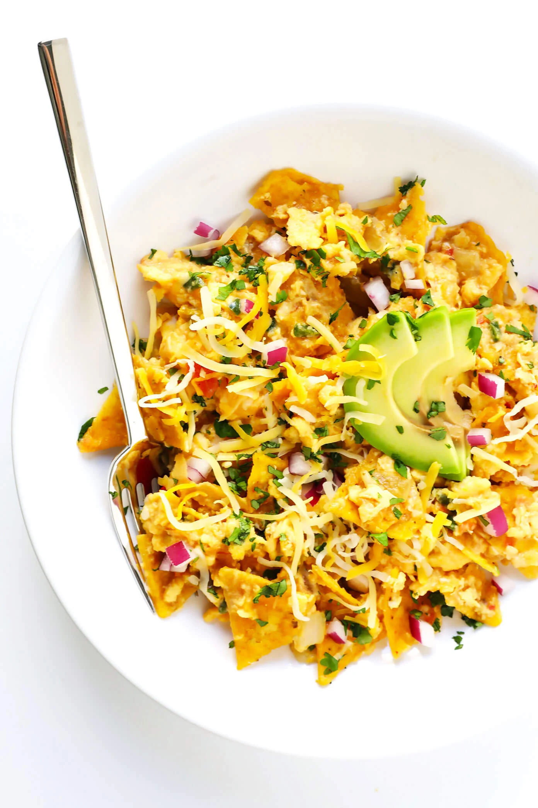

Pierogi

Description
Meet migas, aka the best Tex-Mex breakfast ever.
- Eggs
- Onion, Jalapeño and Garlic
- Corn Tortilla Chips
- Salsa, cheese, and toppings
- Sauté the onion, jalapeño and garlic: In a large sauté pan, cook until they are nice and soft.
- Add eggs: And slow scramble until they are cooked to your desired consistency.
- Add cheese, tortilla chips and salsa: Stir until combined, then cook for 1 or 2 minutes to warm through.
- Serve and garnish: Serve warm, and garnish with lots and lots of your favorite toppings!